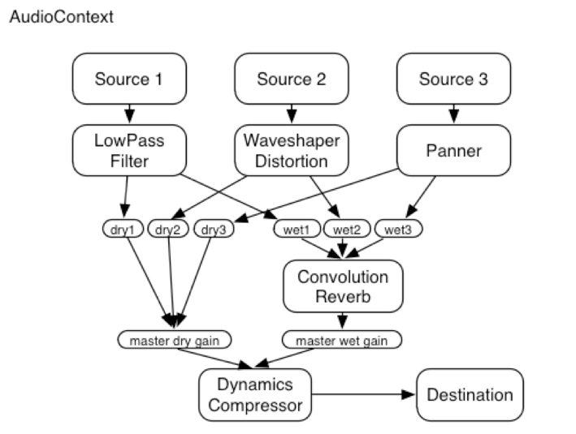
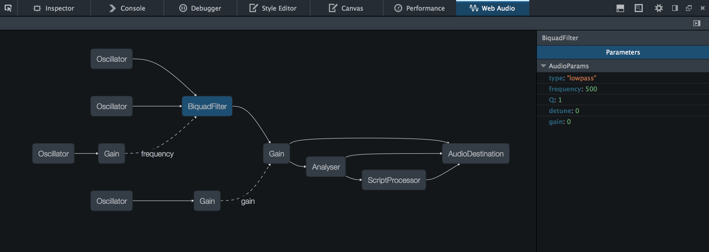
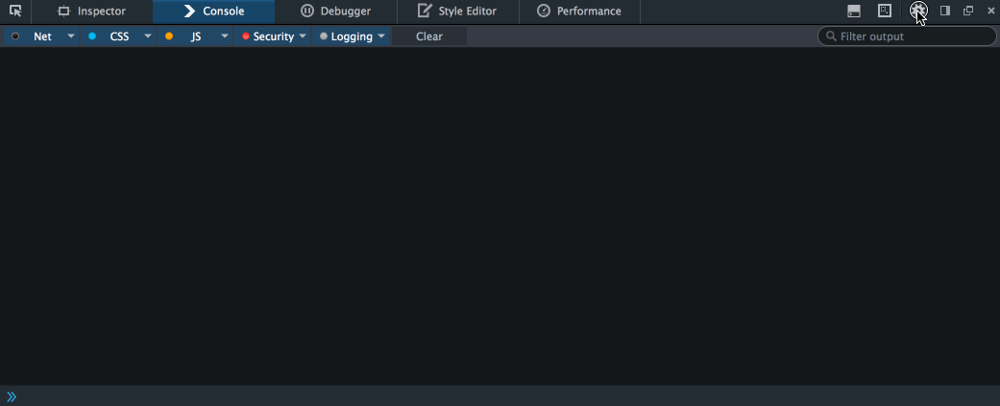

Web Audio Tools
Who is this guy?

- @jsantell
- Firefox Dev Tools
- dancer.js, web audio components
Why tools?
Firefox Audio Tools
Requirements
Firefox 32+
Setup
QUICK DEMO!
Graph View
Chris Wilson's VocoderInspector View
Changing PropertiesUse Cases
- Routing
- Tweaking
- GC
Future Features
- Source Controls
- Designer View
- Bypassing Nodes
- Audio Profiling
- ?????
Other Tools
- From Jaume Sanchez Elias (@thespite)
- Web Audio Hook
Resources
HAVE FUN!
- Jordan Santell
- @jsantell